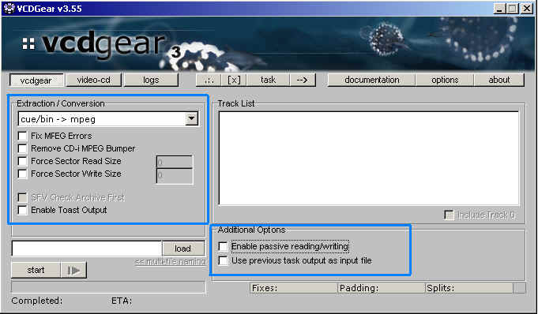

|
|
Running VCDGear
STEP 1

Select the processing method. After you've selected which type of
extraction/conversion you
want to do, enable any processing options you might need.
Force
Sector Read/Write Sizes are mainly used for advanced purposes so it will be
rare that you
will need to use
it.
Remove CD-i MPEG
Bumper is only necessary if you run into video problems during
extraction. Refer to the FAQ for more
info on when and how to use this.
SFV Check Archive First will run an SFV check first if you are doing RAR=>MPEG.
Enable
Toast Output will make VCDGear generate a Toast compatible MPEG output file
for
burning on the MacOS using Toast 4 (possibly 5).
Note: Toast 4 may still complain about accepting
the MPEG file. This is due to Toast being
picky about the type of video format --- even if your video is VideoCD compliant.
It is a bug
evident only in Toast 4.
Enable passive
reading/writing allows you to process a file but not write an output
file. This is a good
way to see how many errors a file might have
without actually making an output file. Processing speed
is very fast when this is enabled.
Use previous
task output as input file is an experimental option and used for advanced
purposes only.
In theory, it can allow you to chain multiple
tasks (e.g. cue/bin => raw => mpg => dat) by piping
the output of one task as the input file of the next. An input filename
for a piped task is not necessary when
this option is enabled.
STEP 2
Click the [load] button to select
your source file. A second window will prompt you for the output file name
after
you've entered in the source filename and
clicked OK. Then click [start].